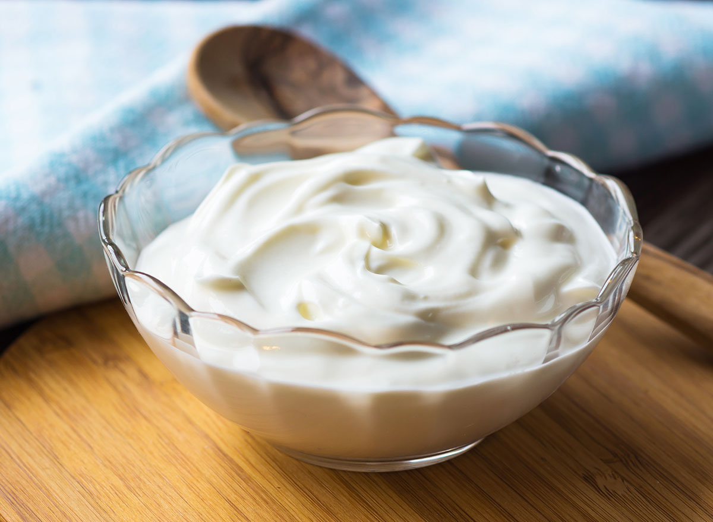

Йогурты
Йогурт — кисломолочный продукт с повышенным содержанием сухих веществ, изготовляемый путём сквашивания
протосимбиотической смесью чистых культур Streptococcus thermophilus (термофильный стрептококк),
содержание которых в готовом продукте на конец срока годности составляет не менее 107 КОЕ (колониеобразующие
единицы) в 1 г продукта (допускается добавление пищевых добавок, фруктов, овощей и продуктов их переработки)
Йогурты бывают:
- Натуральный. Состоит только из молока и специальной закваски

- Ароматизированный. Содержит натуральные или искусственные ароматизаторы

- Фруктовый. Содержит кусочки консервированных ягод и фруктов, которые не должны превышать более 30% общего объема

Как приготовить йогурт самому
5 важных правил:
- Молоко нужно обязательно кипятить, чтобы таким образом убить все болезнетворные бактерии, которые могут в нем содержаться. Рекомендуется доводить до кипения даже пастеризованное молоко.
- Для приготовления йогурта не используйте слишком горячее молоко, иначе полезные бактерии погибнут. Идеальная температура +38°С…+40°С, то есть – чуть выше теплой.
- Столовые приборы и всю посуду, в которой вы будете готовить йогурт, нужно обязательно обдавать кипятком.
- На качество и консистенцию домашнего йогурта влияет жирность молока, поэтому выбирайте оптимальную 3,2–3,5%. Те, кто не заботится о фигуре и просто хочет вкусный натуральный йогурт, может использовать молоко жирностью 6%.
- Сквасившийся продукт не взбалтывайте и не перемешивайте, чтобы не разрушить структуру, иначе йогурт не созреет.
Классический йогурт в термосе
Ингредиенты:
- 1 л молока
- 200 г натурального йогурта (внимательно изучите состав, йогурт должен быть свежим)
Как приготовить классический йогурт в термосе:
- Молоко вскипятить и остудить до температуры 38–40°С. Термос ополоснуть кипятком, вылить воду и оставить на 1–2 минуты, пока выйдет пар. Затем накрыть крышкой.
- 100 мл молока соединить с йогуртом и размешать, чтобы не было комков. В оставшееся молоко добавить разведенное молоко с йогуртом и перемешать.

- Полученную смесь перелить в термос, закрыть крышкой и оставить на 6–8 часов. Готовый йогурт разлить по небольшим баночкам и поставить в холодильник еще на 8 часов.
 За это время он отдохнет, созреет и приобретет нужную консистенцию.
За это время он отдохнет, созреет и приобретет нужную консистенцию.
Этот и другие рецепты вы найдёте на сайте Домашний